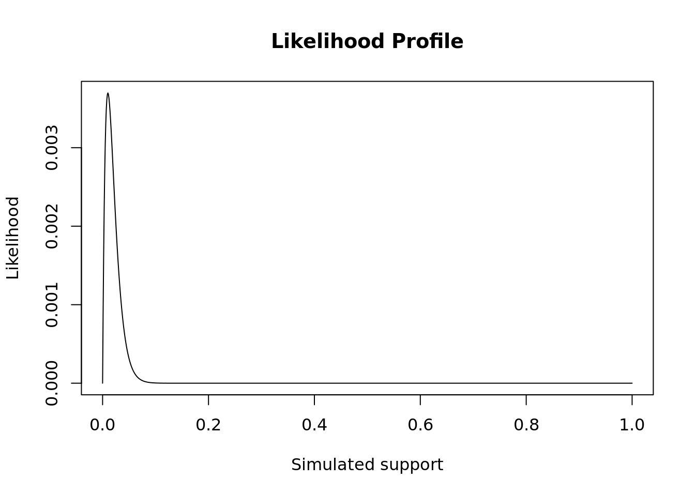
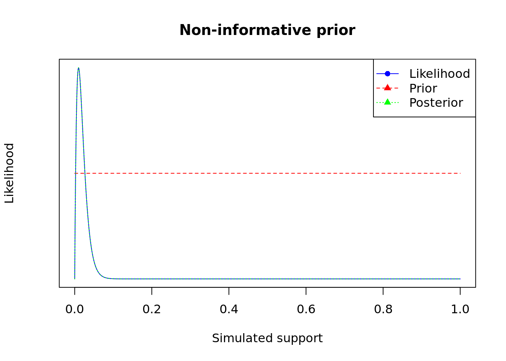
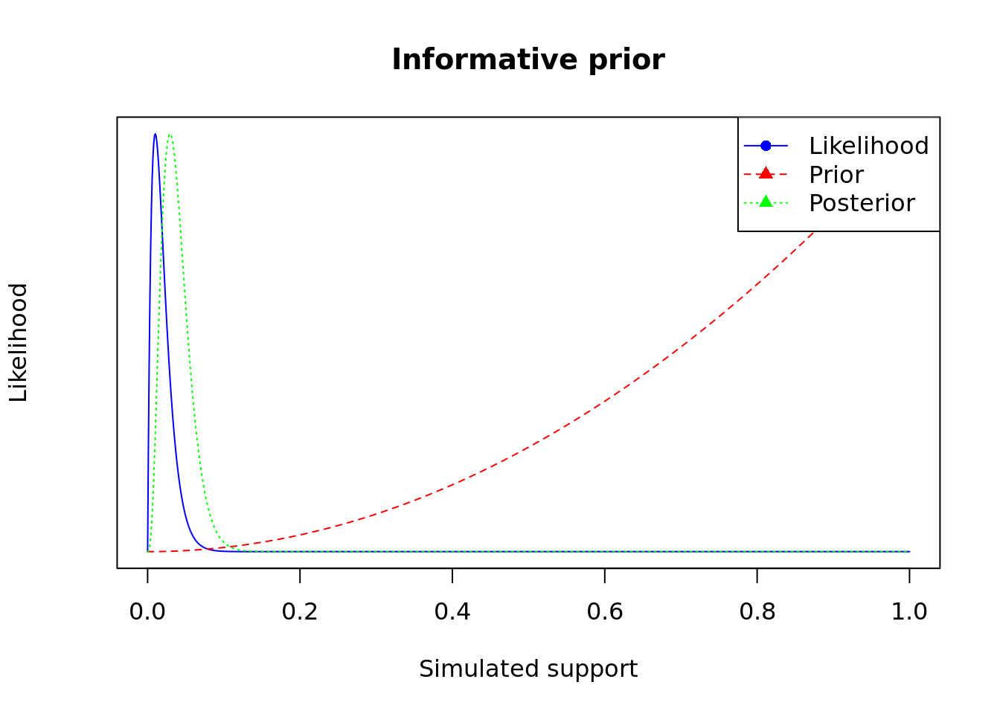
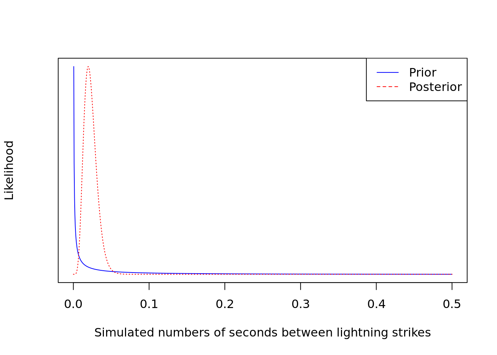
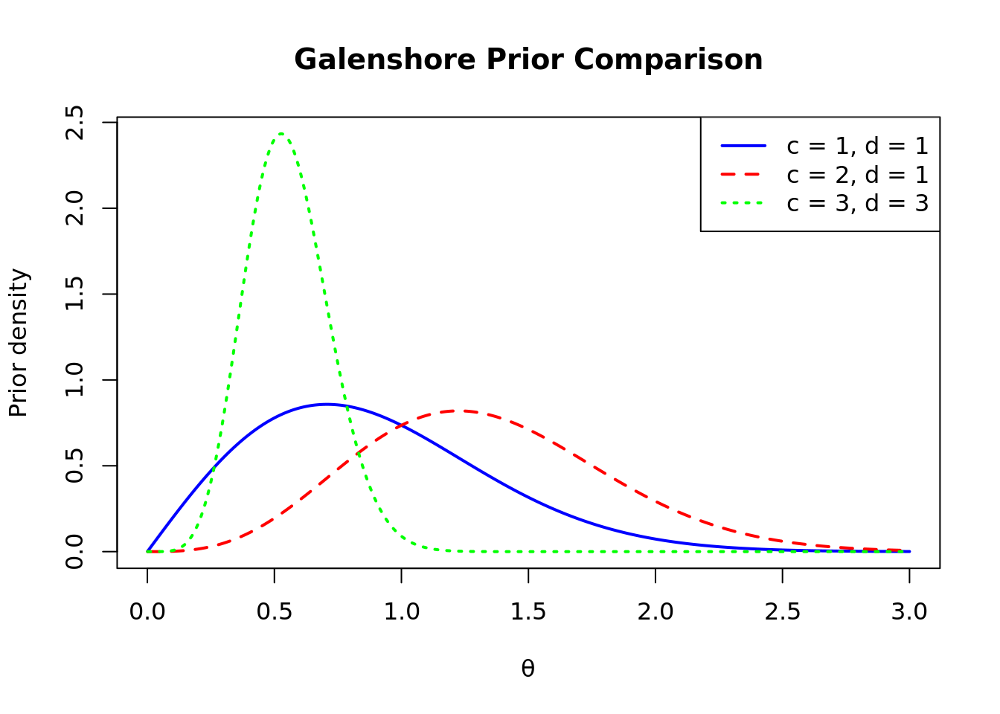

set.seed(123)HW2
Question 1
Task 3
Write a function that takes as its inputs that data you simulated (or any data of the same type) and a sequence of \(\theta\) values of length 1000 and produces likelihood values based on the Binomial Likelihood. Plot your sequence and its corresponding Likelihood function.
The likelihood function is given below. Since this is a probability and is only valid over the interval from \([0, 1]\) we generate a sequence over that interval of length 1000.
You have a rough sketch of what you should do for this part of the assignment. Try this out in lab on your own.
# define observed data
obs_data <- rbinom(n=100, size=1, prob=0.01)
### Bernoulli LH Function ###
# Input: obs_data, theta
# Output: bernoulli likelihood
bernoulli_lh <- function(obs_data, theta) {
n<-length(obs_data) # define num samples
x<-sum(obs_data) # define sample data
return(theta^x*(1-theta)^(n-x))
}
### Plot LH for a grid of theta values ###
# Create the grid #
thetas = seq(0, 1, length.out = 1000)
# Store the LH values
lh_values<- bernoulli_lh(obs_data, thetas)
# Create the Plot
plot(thetas, lh_values, type = "l", main= "Likelihood Profile",
xlab="Simulated support",ylab = "Likelihood")
Task 4
Write a function that takes as its inputs prior parameters \(\text{a}\) and \(\text{b}\) for the Beta-Bernoulli model and the observed data, and produces the posterior parameters you need for the model. \(\textbf{Generate and print}\) the posterior parameters for a non-informative prior such as \(\text{(a,b)} = (1,1)\) and for an informative case \(\text{(a,b)} = (3,1)\).
# function to update prior params for Beta-Bernoulli
## inputs: observed data, a, b
update_params <- function(obs_data, a, b) {
n <- length(obs_data) # define num samples
x <- sum(obs_data) # define sample data
results <- list(a_param = x + a, b_param = n - x + b) # append updated params
return(results)
}
# define non-informative a,b
a1<-1
b1<-1
# define informative a,b
a2<-3
b2<-1
# run function for non-info case
output1 <- update_params(obs_data, a1, b1)
# extract a,b
a1_new<- output1$a_param
b1_new<- output1$b_param
# print
print(a1_new)[1] 2print(b1_new)[1] 100# run function for info case
output2 <- update_params(obs_data, a2, b2)
# extract a,b
a2_new<- output2$a_param
b2_new<- output2$b_param
# print
print(a2_new)[1] 4print(b2_new)[1] 100Here we wrote a function \(\text{update_params}\) that takes as its inputs prior parameters \(\text{a}\) and \(\text{b}\) for the Beta-Bernoulli model and the observed data, \(\text{obs_data}\), and produces the posterior parameters we need for the model. The posterior parameters for a non-informative prior \((a,b) = (1,1)\) were \((a_n,b_n) = (2,100)\), and the posterior parameters for an informative case \((a,b) = (3,1)\) were \((a_n,b_n) = (4,100)\).
Task 5
Create two plots, one for the informative and one for the non-informative case to show the posterior distribution and superimpose the prior distributions on each along with the likelihood. What do you see? Remember to turn the y-axis off using the command \(yaxt=\text{"none"}\) in the plot() command. Why? Superimposing the distributions may make the scale non-sense.
# Non-informative case
## define prior
prior1 <- dbeta(thetas, shape1 = a1, shape2 = b1)
## define posterior using updated params
posterior1 <- dbeta(thetas, shape1 = a1_new, shape2 = b1_new)
#all_y <- range(c(lh_values, prior1, posterior1), na.rm = TRUE)
## plot the likelihood
plot(thetas, lh_values,type = "l", col = "blue", pch = 16,
xlab = "Simulated support",ylab = "Likelihood",
main = "Non-informative prior", yaxt = "n",
xlim = range(thetas), yaxt="none")
# overlay prior
par(new = TRUE)
# plot prior
plot(thetas, prior1,type = "l", col = "red", pch = 17, lty = 2,
axes = FALSE, xlab = "", ylab = "",xlim = range(thetas),
yaxt="none")
# overlay posterior
par(new = TRUE)
# plot posterior
plot(thetas, posterior1,type = "l", col = "green", pch = 17, lty = 3,
axes = FALSE, xlab = "", ylab = "",xlim = range(thetas),yaxt="none")
# add legend
legend("topright",legend = c("Likelihood", "Prior", "Posterior"),
col = c("blue", "red", "green"), lty = c(1, 2, 3), pch = c(16, 17, 17))
# Informative Case
# define prior
prior2 <- dbeta(thetas, shape1 = a2, shape2 = b2)
# define posterior with updated parameters
posterior2 <- dbeta(thetas, shape1 = a2_new, shape2 = b2_new)
#all_y <- range(c(lh_values, prior2, posterior2), na.rm = TRUE)
# plto the likelihood
plot(thetas, lh_values,type = "l", col = "blue", pch = 16,
xlab = "Simulated support",ylab = "Likelihood",main = "Informative prior",
yaxt = "n",xlim = range(thetas),yaxt="none")
# overlay prior
par(new = TRUE)
# plot prior
plot(thetas, prior2, type = "l", col = "red", pch = 17, lty = 2,
axes = FALSE, xlab = "", ylab = "", xlim = range(thetas), yaxt="none")
# overlay posterior
par(new = TRUE)
# plot posterior
plot(thetas, posterior2, type = "l", col = "green", pch = 17, lty = 3,
axes = FALSE, xlab = "", ylab = "", xlim = range(thetas),yaxt="none")
# add legend
legend("topright",legend = c("Likelihood", "Prior", "Posterior"),
col = c("blue", "red", "green"),lty = c(1, 2, 3),pch = c(16, 17, 17))
### Here, I used ChatGPT to help with plot formatting/styles
### comments are my ownHere, we see the posterior overlap the likelihood in the case of the non-informative prior. When we implement an informative prior, the posterior moves away from the likelihood and approaches the prior.
Question 2
Part A
Derive (step by step) the posterior density, \(p(\theta|x_{1:n})\). Give the form of the posterior in terms of one of the most common distributions (Bernoulli, Beta, Exponential, or Gamma).
Proof. Suppose we have data \(x_1,\dotsc,x_n\), modeled as i.i.d. observations from an Exponential distribution, and suppose that our prior is \(\theta\sim Gamma(a,b)\), that is, \[ p(\theta) = Gamma(\theta|a,b) = \frac{b^a}{\Gamma(a)}\theta^{a-1}\exp(-b\theta) \mathbb{1}(\theta>0). \]
We will find the posterior density, \(p(\theta|x_{1:n})\). By Baye’s Theorem, we have
\[ p(\theta|x_{1:n}) = \frac{p(\theta, x)}{p(x)} = \frac{p(\theta|x)p(\theta)}{p(x)} \]. Since we are conditioning in the data, it is a constant, so we have
\[ \frac{p(\theta|x)p(\theta)}{p(x)} \propto p(\theta|x)p(\theta) \]. Then, since we have data \(x_1,\dotsc,x_n\), modeled as i.i.d. observations from an Exponential distribution, and suppose that our prior is \(\theta\sim Gamma(a,b)\), we may write the following:
\[ p(\theta|x)p(\theta) = \Pi_{i=1}^n(\theta*e^{-\theta \sum_{i=1}^n x_i})*(\frac{b^a}{\Gamma{(a)}}\theta^{a-1}*e^{-b\theta}) \]. Combining terms and simplifying yields
\[ p(\theta|x)p(\theta) = \Pi_{i=1}^n(\theta*e^{-\theta \sum_{i=1}^n x_i})*(\frac{b^a}{\Gamma{(a)}}\theta^{a-1}*e^{-b\theta})= p(\theta|x)p(\theta) = (\theta^n*e^{-\theta \sum_{i=1}^n x_i})*(\frac{b^a}{\Gamma{(a)}}\theta^{a-1}*e^{-b\theta}) = \theta^{a+n-1}*e^{-\theta(\sum_{i=1}^n x_i +b)) \propto \text{Gamma}(\theta|a_n = a+n-1, b_n = \sum_{i=1}^n x_i +b) \]. Therefore, we found \(p(\theta|x_{1:n}) \propto \text{Gamma}(\theta| a_n = a+n-1, b_n =\sum_{i=1}^n x_i +b)\). QED
Question: Is this proof correct? check.
Part B
Why is the posterior distribution a proper density or probability distribution function?
The posterior distribution is a proper density because it integrates to 1 over the entire parameter space, \(\theta\).
Question: Check that this is not circular reasoning.
Part C
Now, suppose you are measuring the number of seconds between lightning strikes during a storm, your prior is \(Gamma(0.1,1.0)\), and your data is \[(x_1,\dotsc,x_8) = (20.9, 69.7, 3.6, 21.8, 21.4, 0.4, 6.7, 10.0).\] Plot the prior and posterior p.d.f.s. (Be sure to make your plots on a scale that allows you to clearly see the important features.)
# define gamma distribution (prior)
prior <- dgamma(x = thetas, shape = 0.1, rate = 1.0)
# define data
data <- c(20.9, 69.7, 3.6, 21.8, 21.4, 0.4, 6.7, 10.0)
# define the posterior dist
n<-length(data) # define n
posterior <- dgamma(x = thetas, shape = 0.1+n-1, rate = 1.0 + sum(data))
thetas<-seq(0, 0.5, length.out = 1000)
# plot prior
plot(thetas, prior,type = "l", col = "blue",
xlab = "Simulated numbers of seconds between lightning strikes",ylab = "Likelihood", yaxt = "n", xlim = range(thetas), yaxt="none")
# overlay posterior
par(new = TRUE)
# plot posterior
plot(thetas, posterior,type = "l", col = "red", lty = 3,
axes = FALSE, xlab = "", ylab = "",xlim = range(thetas),yaxt="none")
# add legend
legend("topright",legend = c("Prior", "Posterior"),
col = c("blue", "red"), lty = c(1, 2))
Question: Did I model this properly? Why is there only density near 0 for theta?
Part D
Give a specific example of an application where an Exponential model would be reasonable. Give an example where an Exponential model would NOT be appropriate, and explain why.
One example where an exponential model would be reasonable is measuring the wait time between customers in a line at a store.
One example where an exponential model would not be appropriate is for modeling coin flips. A coin flip has a binary outcome and exponential distribtuions model continuous outcomes.
Question: Can you improve these examples with basic information about exponential model requirements?
Question 3
Priors, Posteriors, Predictive Distributions (Hoff, 3.9) An unknown quantity \(Y | \theta\) has a Galenshore(\(a, \theta\)) distribution if its density is given by \[p(y | \theta) = \frac{2}{\Gamma(a)} \; \theta^{2a} y^{2a - 1} e^{-\theta^2 y^2}\] for \(y>0, \theta >0, a>0.\) Assume for now that \(a\) is known and \(\theta\) is unknown and a random variable. For this density, \[E[Y] = \frac{\Gamma(a +1/2)}{\theta \Gamma(a)}\] and \[E[Y^2] = \frac{a}{\theta^2}.\]
Part A
Identify a class of conjugate prior densities for \(\theta\). Assume the prior parameters are \(c\) and \(d\), which are fixed and known. That is, state the prior distribution for \(\theta,\) which will have known and fixed parameters \(c, d\) such that the resulting posterior is conjugate. Plot a few members of this class of densities.
Suppose \(\theta\) also has Galenshore prior density, where \(\theta \sim \text{Galenshore}(c,d)\). The prior parameters are \(c\) and \(d\), which are fixed, known, and greater than 0. So, we have
\[ p(\theta | c,d) = \frac{2}{\Gamma(c)} \; d^{2c} \theta^{2c - 1} e^{-d^2 \theta^2}\qquad \theta>0 \]
. We will show that the posterior density, \(p(\theta|y_{1:n})\), is conjugate (i.e., the posterior takes on an updated form of the prior). Let \(y_1, ..., y_n\) be independent observations such that \(Y_i|\theta \sim \text{Galenshore}(a,\theta)\). By Bayes’ Theorem,
\[ p(\theta|y_{1:n}) = \frac{p(\theta, y_{1:n})}{p(y_{1:n})} = \frac{p(\theta|y_{1:n})p(\theta)}{p(y_{1:n})} \]. Since we are conditioning on the data, it is a constant, so we have
\[ \frac{p(\theta|y_{1:n})p(\theta)}{p(y_{1:n})} \propto p(\theta|y_{1:n})p(\theta) \]. Then, substituting in our likelihood and prior gives the following:
\[ p(\theta|y_{1:n})p(\theta) = \prod_{i=1}^n(\frac{2}{\Gamma(a)} \; \theta^{2a} y_i^{2a - 1} e^{-\theta^2 y_i^2})*(\frac{2}{\Gamma(c)} \; d^{2c} \theta^{2c - 1} e^{-d^2 \theta^2}) \]
. Combining terms and absorbing terms which do not depend on \(\theta\) into the constant of proportionality yields
\[ \begin{align}p(\theta \mid y_{1:n})&\propto\theta^{2an}\exp\left(-\theta^2\sum_{i=1}^n y_i^2\right)\theta^{2c-1}\exp(-d^2\theta^2) \propto\theta^{2(c+na)-1}\exp\left[-\theta^2\left(d^2+\sum_{i=1}^n y_i^2\right)\right].\end{align} \]
. Therefore, we found \(p(\theta|y_{1:n}) \propto \text{Galenshore}(\theta| c' = c + na, d' = \sqrt{d^2+\sum_{i=1}^n y_i^2})\), so the resulting posterior is conjugate.
Here, we plot a few members of this class of densities:
### Galenshore prior density function ###
# Inputs: c, d, and a vector of theta values
# Output: Galenshore(c, d) density evaluated at theta
galenshore_prior <- function(c, d, thetas) {
2 / gamma(c) *
d^(2 * c) *
thetas^(2 * c - 1) *
exp(-d^2 * thetas^2)
}
### Create grid of theta values ###
thetas <- seq(0.001, 3, length.out = 1000)
c1 <- 1
d1 <- 1
c2 <- 2
d2 <- 1
c3 <- 3
d3 <- 3
### Calculate prior densities ###
prior1 <- galenshore_prior(c1, d1, thetas)
prior2 <- galenshore_prior(c2, d2, thetas)
prior3 <- galenshore_prior(c3, d3, thetas)
### Plot first prior, then add the other two ###
plot(
thetas, prior1,
type = "l",
col = "blue",
lwd = 2,
xlab = expression(theta),
ylab = "Prior density",
main = "Galenshore Prior Comparison",
ylim = c(0, max(prior1, prior2, prior3))
)
lines(thetas, prior2, col = "red", lwd = 2, lty = 2)
lines(thetas, prior3, col = "green", lwd = 2, lty = 3)
legend(
"topright",
legend = c("c = 1, d = 1", "c = 2, d = 1", "c = 3, d = 3"),
col = c("blue", "red", "green"),
lty = c(1, 2, 3),
lwd = 2
)
Here, I used ChatGPT to help me fix formatting for long equations and to help me plot the densities.
Part B
Let \(Y_1, \ldots, Y_n \stackrel{iid}{\sim}\) Galenshore(\(a, \theta\)). Find the posterior distribution of \(\theta | y_{1:n}\) using a prior from your conjugate class.
Let \(\theta \sim \text{Galenshore}(c=1,d=1)\). By the proof-sketch shown in Part A, we have that
\(\theta \mid y_{1:n} \sim \text{Galenshore}(1+na,\sqrt{1^2+\sum_{i=1}^{n}y_i^2})\), so
\[p(\theta \mid y_{1:n}) =\frac{2}{\Gamma(1+na)} \; (1+\sum_{i=1}^ny_i^2)^{1+na} \theta^{2(1+na) - 1} e^{-(1+\sum_{i=1}^ny_i^2) \theta^2}\qquad \theta>0\].
Part C
Show that \[\frac{p(\theta_a | y_{1:n})}{p(\theta_b | y_{1:n})} = \bigg( \frac{\theta_a}{\theta_b} \bigg)^{2(an + c) - 1} e^{(\theta_b^2 - \theta_a^2)(d^2 + \sum y_i^2)},\] where \[\theta_a, \theta_b \sim \text{Galenshore}(c,d).\] Identify a sufficient statistic.
Let
\[\theta_a, \theta_b \sim \text{Galenshore}(c,d).\] From Part B, we know
\[p(\theta_a \mid y_{1:n}) =\frac{2}{\Gamma(1+na)} \; (1+\sum_{i=1}^ny_i^2)^{1+na} \theta_a^{2(1+na) - 1} e^{-(1+\sum_{i=1}^ny_i^2) \theta_a^2}\qquad \theta_a>0\]
and \[p(\theta_b \mid y_{1:n}) =\frac{2}{\Gamma(1+na)} \; (1+\sum_{i=1}^ny_i^2)^{1+na} \theta_b^{2(1+na) - 1} e^{-(1+\sum_{i=1}^ny_i^2) \theta_b^2}\qquad \theta_b>0\]. Dividing \[\frac{p(\theta_a | y_{1:n})}{p(\theta_b | y_{1:n})}\] and canceling out like terms (that don’t depend on \(\theta_a\) or \(\theta_b\)) gives \[\frac{p(\theta_a | y_{1:n})}{p(\theta_b | y_{1:n})} = \bigg( \frac{\theta_a}{\theta_b} \bigg)^{2(an + c) - 1} e^{(\theta_b^2 - \theta_a^2)(d^2 + \sum_{i=1}^n y_i^2)}\]. A sufficient statistic is \(T(y_{1:n}) = \sum_{i=1}^ny_i^2\).
Question: Do I have to defend sufficeint stat?
Part D
Determine \(E[\theta | y_{1:n}]\).
In the introduction to Question 3, we are given
\[E[Y] = \frac{\Gamma(a +1/2)}{\theta \Gamma(a)}\]
for the Galenshore distribution. Since the posterior is also Galenshore with updated parameters, \[ \theta \mid y_{1:n} \sim \operatorname{Galenshore}\left( c+na,; \sqrt{d^2+\sum_{i=1}^n y_i^2} \right), \]we have
\[\boxed{E[\theta | y_{1:n}] = \frac{\Gamma((an+c) +1/2)}{\sqrt{(d^2+\sum_{i=1}^ny_i^2)} \Gamma(an+c)}}.\]
Part E
Show that the form of the posterior predictive density is \[p(y_{n+1} | y_{1:n}) = \frac{2 y_{n+1}^{2a - 1} \Gamma(an + a + c)}{\Gamma(a)\Gamma(an + c)} \frac{(d^2 + \sum y_i^2)^{an + c}}{(d^2 + \sum y_i^2 + y_{n+1}^2)^{(an + a + c)}}.\]
To calculate the posterior predictive density, use
\[ p(y_{n+1} \mid y_{1:n}) = \int_0^\infty p(y_{n+1} \mid \theta) p(\theta \mid y_{1:n}) \, d\theta. \]
The likelihood for the new observation is
\[ p(y_{n+1} \mid \theta) = \frac{2}{\Gamma(a)} \theta^{2a} y_{n+1}^{2a-1} \exp\left(-\theta^2 y_{n+1}^2\right). \]
From Part A, the posterior density is
\[ p(\theta \mid y_{1:n}) = \frac{2}{\Gamma(an+c)} \left(d^2+\sum_{i=1}^n y_i^2\right)^{an+c} \theta^{2(an+c)-1} \exp\left[ -\theta^2 \left(d^2+\sum_{i=1}^n y_i^2\right) \right]. \]
Substituting the likelihood and posterior into the posterior predictive integral gives
\[ \begin{aligned} p(y_{n+1} \mid y_{1:n}) &= \int_0^\infty \left[ \frac{2}{\Gamma(a)} \theta^{2a} y_{n+1}^{2a-1} \exp\left(-\theta^2 y_{n+1}^2\right) \right] \\ &\quad \times \left[ \frac{2}{\Gamma(an+c)} \left(d^2+\sum_{i=1}^n y_i^2\right)^{an+c} \theta^{2(an+c)-1} \exp\left( -\theta^2 \left(d^2+\sum_{i=1}^n y_i^2\right) \right) \right] \, d\theta \\ &= \frac{4y_{n+1}^{2a-1}} {\Gamma(a)\Gamma(an+c)} \left(d^2+\sum_{i=1}^n y_i^2\right)^{an+c} \\ &\quad \times \int_0^\infty \theta^{2(an+a+c)-1} \exp\left[ -\theta^2 \left( d^2+\sum_{i=1}^n y_i^2+y_{n+1}^2 \right) \right] \, d\theta. \end{aligned} \]
To obtain a proper posterior (integrates to 1 over the parameter space, \(\Theta\), we multiply and divide by \[ \frac{2}{\Gamma{(an+a+c)}} (d^2+\sum_{i=1}^ny_i^2+y_{n+1}^2)\], which gives
we obtain
\[ \boxed{ p(y_{n+1} \mid y_{1:n}) = \frac{ 2y_{n+1}^{2a-1}\Gamma(an+a+c) }{ \Gamma(a)\Gamma(an+c) } \frac{ \left(d^2+\sum_{i=1}^n y_i^2\right)^{an+c} }{ \left( d^2+\sum_{i=1}^n y_i^2+y_{n+1}^2 \right)^{an+a+c} }. } \]
I used ChatGPT to re-format my long equations. Algebra is my own.